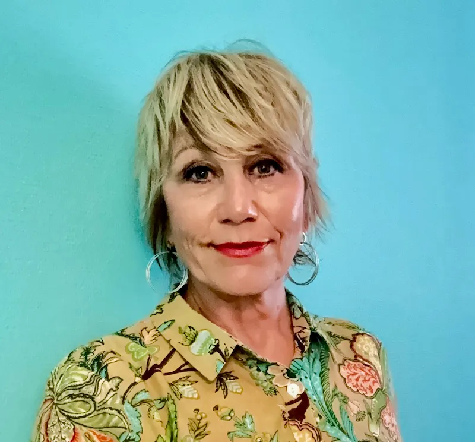

SUBPLENARY
Emotionally Focused Family Therapy (EFFT): What Makes It Unique?
Marianne Gustafsson
Read abstract & biography
Abstract
Emotionally Focused Family Therapy (EFFT), developed by Dr. Sue Johnson together with colleagues including Gail Palmer and James Furrow, is an attachment-based, experiential model of family therapy that extends the principles of Emotionally Focused Therapy (EFT) to the family system. Building on decades of research supporting EFT with couples, EFFT provides a distinctive framework for understanding and transforming family distress through attachment, emotional bonding, and relational repair.
EFFT conceptualizes family distress not primarily as a problem of behaviour, parenting skills, or individual pathology, but as a disruption of attachment bonds and blocked emotional responsiveness within the family system. A central premise is that parents are the primary resource for children’s security and resilience. Under conditions of trauma, chronic stress, loss, or relational injury, caregivers may lose access to their natural caregiving system and their capacity for emotional availability and protection. At the same time, children and adolescents may struggle to express attachment needs in ways that can be received.
EFFT helps therapists transform these relational blocks by restoring parents’ access to their caregiving system while supporting children and adolescents in expressing underlying vulnerabilities and needs for connection. The model is distinctive in its experiential focus, using emotion as both the target and the agent of change. Through enactments, emotional processing, and corrective attachment experiences, families are supported in creating new patterns of safety, responsiveness, and connection.
For experienced family therapists, EFFT offers a powerful way of meeting the whole family system while keeping attachment and emotion at the centre of therapeutic change. This seminar will introduce the theoretical foundations, clinical process, and key interventions of EFFT, illustrated through clinical examples from a Swedish context.
Biography
Marianne Gustafsson is a social worker, licensed psychotherapist, systemic therapist, teacher, and supervisor in systemic psychotherapy. She is an internationally certified Emotionally Focused Therapy (EFT) Trainer, Supervisor, and Therapist through the International Centre for Excellence in Emotionally Focused Therapy (ICEEFT).
With more than 25 years of clinical experience in Swedish Child and Adolescent Psychiatry and private practice, Marianne has specialized in family therapy, attachment-based approaches, and emotionally focused interventions with couples, individuals, and families.
Since 2013, she has been deeply engaged in the development and dissemination of Emotionally Focused Therapy (EFT) in Sweden, initially focusing on couples therapy (EFCT), and later expanding her work to Emotionally Focused Individual Therapy (EFIT) and, with particular dedication, Emotionally Focused Family Therapy (EFFT).
Marianne is the founder and director of Livsverk and co-director of Stockholm EFT Center, where she provides psychotherapy, supervision, and training for mental health professionals. She combines systemic family therapy traditions with contemporary attachment science and experiential practice.
She is engaged in clinical writing and research, including publications in Fokus på Familjen, a forthcoming article on EFFT, and the ”Stronger Together” research project at Uppsala University, focusing on EFT-based interventions for parents of children diagnosed with cancer.
Marianne’s passion is supporting therapists and families in creating secure emotional bonds, resilience, and healing through meaningful therapeutic relationships.